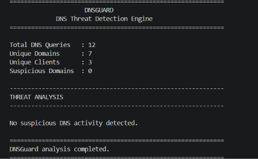
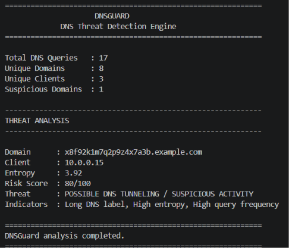

DNSGuard is a lightweight cybersecurity dashboard that analyzes DNS query activity and highlights potentially suspicious behavior using entropy, query frequency and DNS response indicators.
DNSGuard is a Python-based security analysis tool designed to examine DNS query logs and identify potentially suspicious DNS activity.
It analyzes domain characteristics, query frequency, entropy and DNS response behavior to generate a simple risk assessment for security monitoring.
Identifies unusually long DNS labels that may indicate encoded or hidden data.
Measures domain randomness to identify potentially suspicious DNS patterns.
Detects repeated DNS requests that may indicate automated or abnormal activity.
Combines multiple indicators to generate a simple security risk score.
DNSGuard reads DNS query logs containing client, domain and response information.
Domain length, entropy, query frequency and DNS responses are analyzed.
Detected indicators contribute to a risk score from 0 to 100.
Suspicious activity is highlighted for further security investigation.
Core programming language used for DNS log analysis and threat detection.
Used to extract DNS queries, client information and response status from logs.
Used for configurable detection thresholds and risk analysis settings.
Used to build the DNSGuard security dashboard and project interface.
Domain: x8f92k1m7q2p9z4x7a3b.example.com
Client: 10.0.0.15
Entropy: 3.92
Risk Score: 80/100
Indicators: Long DNS label, high entropy and repeated query activity.
DNSGuard uses heuristic-based analysis to identify potentially suspicious DNS activity.
A high risk score indicates that further investigation may be required. It does not by itself confirm that a domain or client is malicious.
DNSGuard is designed as a security monitoring and analysis tool for educational and defensive purposes.

